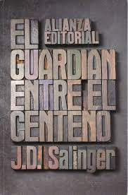
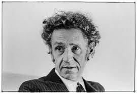

Sinopsis

Holden Caulfield es el primer adolescente real de la literatura. El protagonista de 'El guardián entre el centeno' es un chaval normal que vive en la Nueva york de postguerra, lleno de dudas y miedos, enfrentado a un fracaso escolar que le frustra, con unos deseos alejados de la realidad, mediocre y, por tanto, extremadamente especial en su normalidad. Un personaje que el tiempo ha convertido en un referente. En el espejo de millones de jóvenes que se sienten abrumados ante la visión de una edad adulta que les exige mucho y les ofrece más bien poco.
Sobre el Autor
Juan José Arreola no sólo es un escritor fundamental en la historia de la literatura mexicana, sino que su presencia en el mundo editorial, en la televisión, en la docencia, lo hizo un personaje conocido por amplios sectores sociales, aun por los que están más distantes de la vida literaria. Se trata de una figura imprescindible para el crecimiento y fortalecimiento de la cultura en México por su trabajo en la formación de la nueva generación de escritores, por su participación en los medios de difusión, revistas, libros y programas culturales de televisión, que ensancharon el horizonte de millones de receptores.
Arreola nació en Zapotlán el Grande, hoy Ciudad Guzmán, Jalisco, el 21 de septiembre de 1918 - “nací, como alguna vez lo dije, entre pollos, chivos, guajolotes, vacas, burros y caballos” - ;fue el cuarto de catorce hijos que procrearon Felipe Arreola Mendoza y Victoria Zúñiga. Después de un largo ir y venir por distintas partes del país y del mundo: Zapotlán, Guadalajara, Colima, Ciudad de México, París, volvió a Guadalajara, donde murió el 3 de diciembre de 2001.